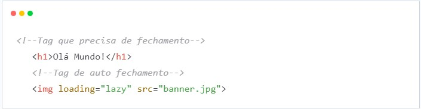
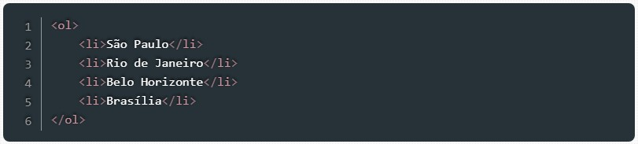
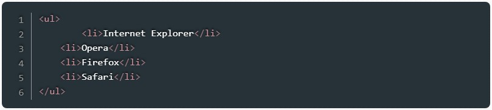

Falar de tecnologia sem contar sua história não faz muito sentido. É por este motivo que o professor Diogo Mainardes trouxe histórias fantásticas da evolução dos computadores e suas linguagens, até chegar aos nossos dias.
Não vou ser redundante em contar toda história novamente, mas trarei alguns pontos que me deixaram mais surpreso.
O primeiro computador era tão grande que era necessário uma área de aproximadamente 180m2 para instalar toda sua infraestrutura. Claro que sua finalidade não tinha nada de nobre, pois ele foi criado para fins de guerra.
Não posso deixar de citar uma das histórias mais loucas mas que marcou o mundo da computação, o dia que Grace Hopper, uma cientista incrível e uma das primeiras programadoras, identificou um erro que aparentemente era comum, catalogou em um dos seus relatórios e descreveu como "bug", e este termo ficou marcado pra sempre no nosso cotidiano. Assim surgiu o termo que definiria todos os erros de sistema da tecnologia, e que as vezes usamos emprestados para nosso dia a dia comum.
Para desenvolvermos bons website, precisamos entender como funciona a comunicação entre cliente servidor ou vice-versa.
Podemos dizer o funcionamento do website começa por entender o que seria o conceito Client e o Server. O que é visual e interativo para o usuário, é a comunicação com o cliente, que além de ser bem importante tem suas linguagens próprias. São elas: HTML | CSS | JAVASCRIPT | IMAGENS, e com o auxilio de alguns frameworks. E nesta hora que existe a preocupação com o design e usabilidade do site.
Já a comunicação Server é o que podemos dizer de parte funcional de todo o sistema. Nesta etapa o conteúdo criado visualmente faz mais sentido e acessível para o acesso independente de onde é feita a conexão. Os arquivos são conectados a um servidor e faz com que seu site fique visível em toda internet. E assim como comunicação Cliente, a Server tem sua lingugem expecifica: PHP | JAVASCRIPT | JAVA | C# | RUBY.
Para a alegria de alguns e a tristeza de outros, html não é uma linguagem de programação. Linguagem sim, mas não de programação. Mas tudo começou quando o físico Tim Berners-Lee inventou uma forma de marcar referencias entre textos. Criando então o que conhecemos hoje como Linguagem de Marcação de Hipertexto (HiperText Markup Language)
O HTML vem evoluindo ao longo do tempo, já se passaram algumas versões até a que usamos hoje que é a versão 5, contendo algumas definições de aparência, tabelas e formulários.
Apesar de não ser uma linguagem de programação, para bons desenvolvedores, dominar essa ferramenta se faz necessário para uma boa apresentação de seus projetos.
As tags são formadas por uma estrutura própria, iniciam com o sinal “menor que”, em seguida vem o nome daquele elemento e por fim, o sinal “maior que”. Podem ser dispostas em tags que precisam de fechamento e tags que fecham sozinhas (self-closing). O fechamento de uma tag será definido com uma barra (/), sendo que no caso das tags de auto fechamento, não há necessidade da presença desse caractere.
Dentre as tags mais usadas no html, as tags de lista está entre as primeiras. Por padrão existe dois tipos de lista, uma lista ordenada, que tem como características a numeração de seus itens e a lista não ordenada que pode ter como marcação uma bolinha preta.
Para criar uma lista ordenada é necessário começar informando ao html que vc está criando uma lista e o tipo, e depois inserir os itens:

Fique atento a primeira tag "ol" (Ordered List) é ela que indica que a lista é ordenada, em seguida é feita a inserção dos itens "li" (List Item).
O resultado será esse:
Para a criação de uma lista não ordenada o processo é semelhante, com apenas a alteração das tags iniciais indicando então que a lista não é ordenada.

Novamente chamo a atenção para a tag inicial "ul" (Unordered List) que indica a forma da lista, que no caso do código acima, é uma lista não ordenada. Semelhantemente os itens seguem o mesmo padrão no que se refere ao código ("li").
O resultado será esse: